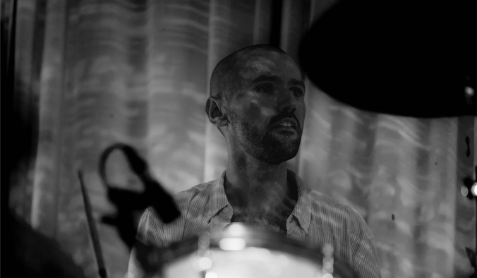
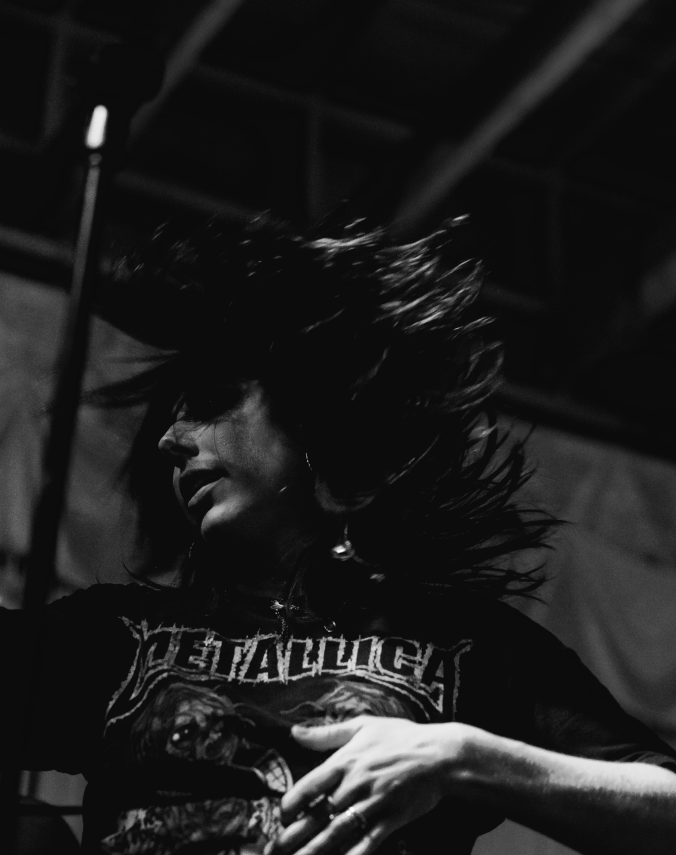
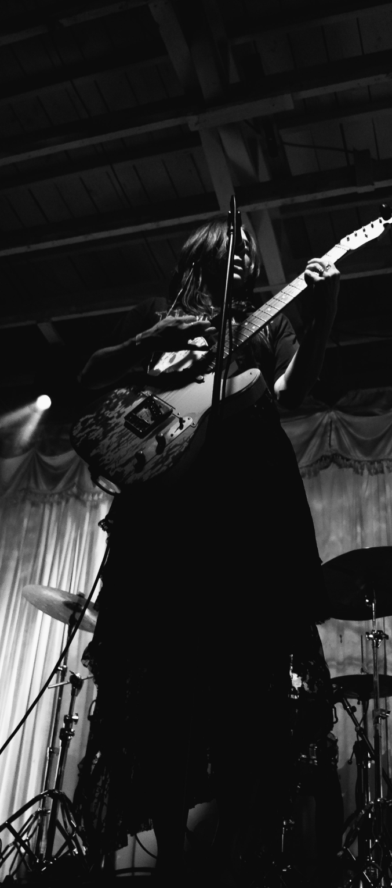
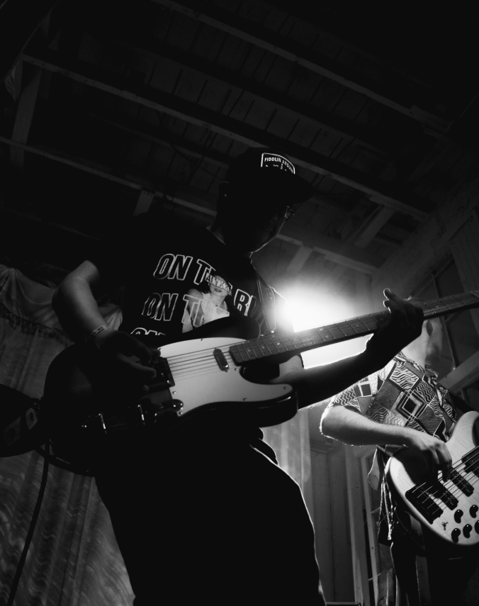
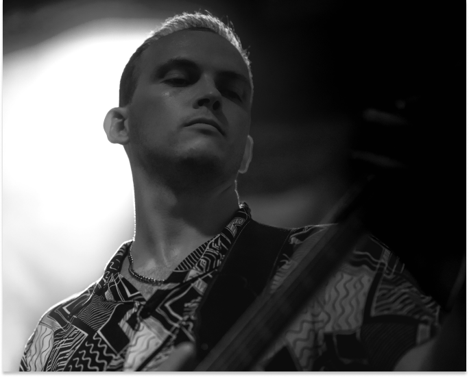

About
The Klinks are a 5-piece alt-rock band from Austin, TX. They are known for their lively performances and emotional rides of original song set lists. Composed of vocalist and songwriter Kaytee Klinkenberg, guitarist Evan Autin, violinist and guitarist Carlos VanWees, bassist Chuck Swartz and drummer Rhett Belcher. The Klinks are a band driven by passion and a collective fulfillment of musical expression...




